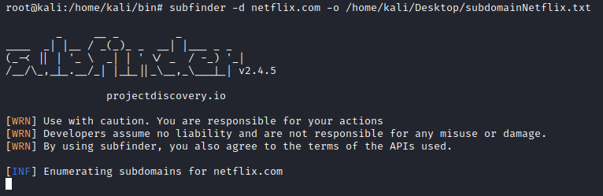
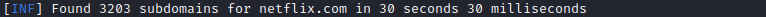

subfinder
Github:
https://github.com/projectdiscovery/subfinderThe
best subdomain enumeration. Itis the one that gets the most results in passive and active mode.
Amass got a few
subdomains that subfinder missed only in the large scope
Install
root@kali# apt install golang
root@kali# cd /home/kali/bin
root@kali# git clone https://github.com/projectdiscovery/subfinder.git
root@kali# cd subfinder/v2/cmd/subfinder
root@kali# go build .
root@kali# mv subfinder /usr/local/bin/
root@kali# subfinder -h
Sources: https://github.com/projectdiscovery/subfinder/tree/master/v2/pkg/subscraping/sourcesexample:
root@kali# subfinder -d netflix.com -o /home/kali/Desktop/subdomainNetflix.txt
 